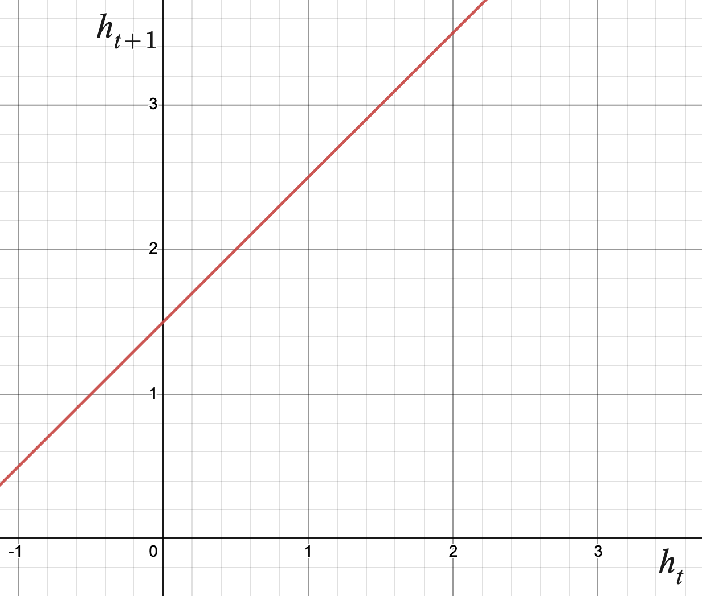
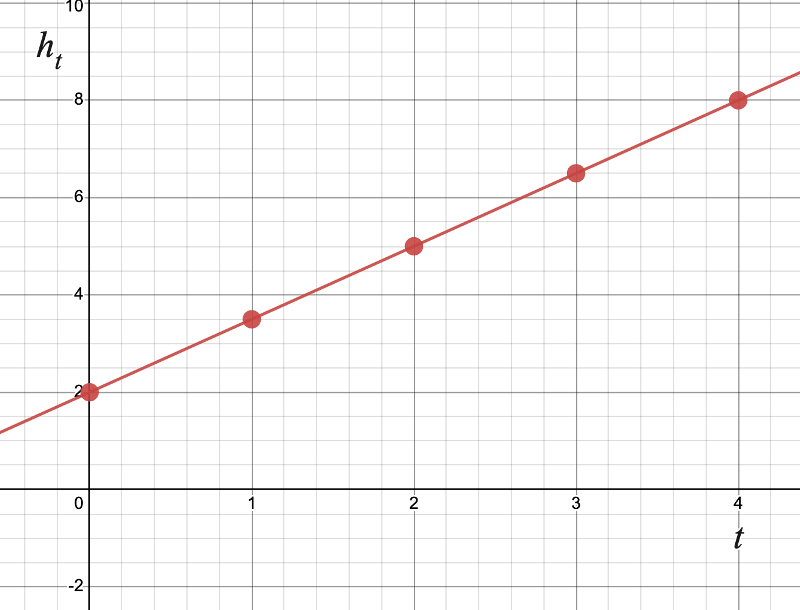
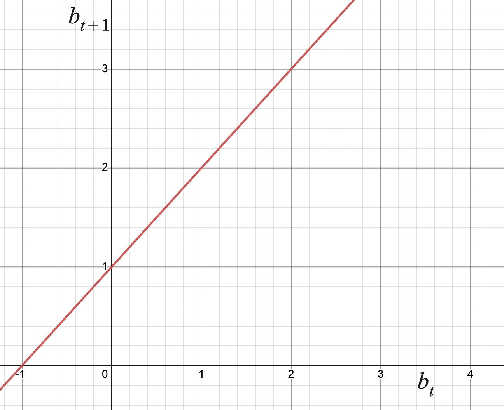
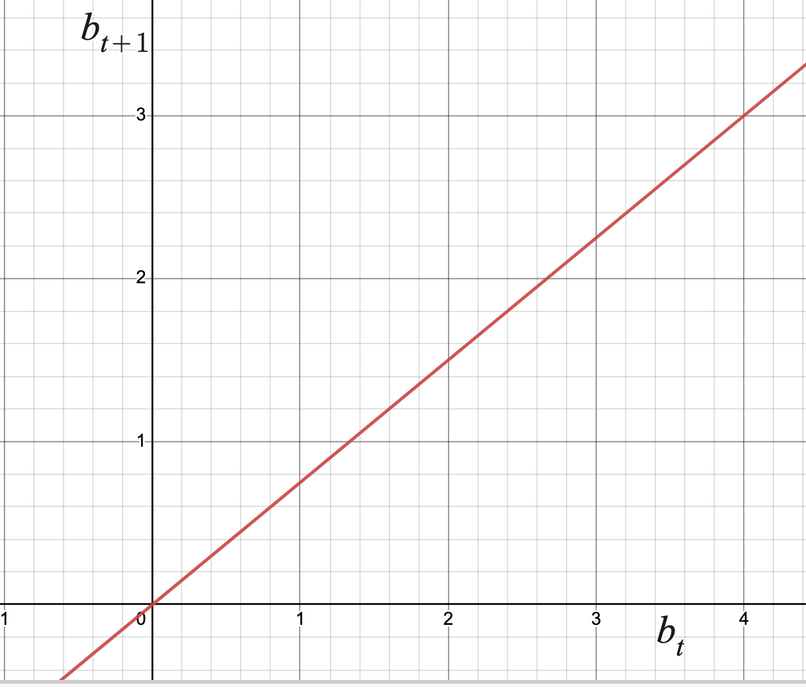

What is a discrete-time dynamical system, and how can we represent one using functions?
How can we make predictions about a discrete-time dynamical system?
We were introduced briefly to discrete-time dynamical systems in Section 1.1. In this section and Section 1.8, we will recall the basic vocabulary of these systems, and go into detail regarding how we can analyze these systems.
Warm-Up1.7.1.
\(2\)\(150\)
Write the relationship of height versus time as a recursive function (recall Subsection 1.2.2). Be careful with units! (Section 1.3)
Use your recursive relationship to determine the height of the tree after \(5\) years.
Subsection1.7.1Representing Discrete-Time Dynamical Systems
Recall that a discrete-time dynamical system (or DTDS) describes a sequence of measurements made at equally spaced intervals. The relationship in Warm-Up 1.7.1 is a DTDS because it describes the height of a tree \(h\) (the dependent variable) at discrete times \(t\) (the independent variable, defined at \(t=1,2,3,\dots\)).
You were asked to describe this relationship recursively, which is a natural way to describe how measurements change from one measurement to the next. This recursive description is called an updating function. In order to use the updating function to determine the height of the tree after \(5\) years, we need to know the initial height of the tree. This is called the initial value of the system.
Example1.7.1.Representing a DTDS.
Consider the relationship described in Warm-Up 1.7.1. Let \(h\) represent the height of the tree after \(t\) years. The initial value is \(h_0 = 2\) meters, and the updating function is \(h_{t+1} = h_t +1.5\text{.}\) Note:
We use special notation when describing relationships recursively. The independent variable \(t\) is given in the subscript, but it is not explicitly used to describe the relationship.
We had to be careful with units. The initial value was given in meters, while the constant amount of change each year was given in centimeters. We converted to a consistent unit of measure before writing the updating function.
In computing with updating functions, it will become useful to identify the function rule used for the recursive relationship. We do this by writing the rule explicitly, treating the current value of the recursive relationship as the input and the next value in the recursive relationship as the output. We call this the updating function rule. For example, in Example 1.7.1, the updating function is \(h_{t+1} = h_t +1.5\text{.}\) Recognizing \(h_t\) as the input and \(h_{t+1}\) as the output, the updating function rule is \(f(x) = x+1.5\text{.}\)
Activity1.7.2.
\(3\)
Write the updating function and initial value for this DTDS. Focus on using correct notation.
What is the updating function rule?
Use your updating function and initial value to determine the population of bacteria after \(4\) minutes.
Subsection1.7.2Solutions to Discrete-Time Dynamical Systems
Representing discrete-time dynamical systems using updating functions can be a convenient way to model our observations. However, this can be a difficult representation to analyze and make predictions off of. For example, if you wanted to use the updating function to determine the height of the tree in Example 1.7.1 after \(50\) years, you would need to iterate the updating function \(50\) times! In order to analyze a DTDS, it is useful to be able to convert the updating function to other representations of the system.
Example1.7.2.Creating Tables and Graphs.
Using the updating function and initial value, you can create a table of values that describes the relationship between the dependent and independent variables of your system. Looking again at the system in Example 1.7.1, we could iterate the updating function to produce the following table:
Table1.7.3.
\(t\)
\(h_t\)
\(h_{t+1}\)
\(0\)
\(2\)
\(3.5\)
\(1\)
\(3.5\)
\(5\)
\(2\)
\(5\)
\(6.5\)
\(3\)
\(6.5\)
\(8\)
Note that Table 1.7.3 holds information about the relationship of height versus time in two different representations. The right two columns display information about the updating function of the system (\(h_t\) versus \(h_{t+1}\)), while the left two columns display information about the input and output variables of the system explicitly (\(t\) versus \(h_t\)). This explicit relationship is called the solution function of the DTDS.
Using Table 1.7.3, we could also create graphs of this system. Note that we must be careful to label axes appropriately to make it clear which representation of the system we are graphing.

Figure1.7.4.Graph of the updating function.
Note that the updating function rule is \(f(x)=x+1.5\text{,}\) which is used to help us graph the updating function.

Figure1.7.5.Graph of the solution function.
Note the discrete dots plotted on the graph of the solution function. These are points from the table and values of the DTDS. They happen to fit the relationship \(h_t = 1.5t + 2\text{,}\) which you see graphed continuously on the graph.
The explicit form of the solution function is very useful to know if we are able to find it. In Example 1.7.2, this was the function \(h_t = 1.5t + 2\text{.}\) It allows us to answer questions about the system that would be very tedious to do using the updating function. For example, the question regarding the tree height after \(50\) years is much easier to answer using the solution function:
Finding the explicit solution function from a recursive updating function, however, can be a challenging (and sometimes impossible) task. In the following examples, we’ll look at a few cases in which we can determine the solution function explicitly.
In order to do so, it is important to recognize the information that an updating function is actually giving us. For example, if you re-write the updating function
you may notice that the left side of the equation is the expression for \(AROC_{[t,t+1]}\) for the solution function \(h_t\text{.}\) Recursive equations written this way are called difference equations, and can help us determine what type of function the solution function is by analyzing its average rate of change.
Example1.7.6.A Linear Solution Function.
Consider the updating function from Example 1.7.1, \(h_{t+1} = h_t + 1.5\text{.}\) As worked out above, written as a difference equation we see that
In words, this says the function \(h_t\) has a constant average rate of change of \(1.5\text{.}\) We know from Section 1.4 that this describes a linear function, and so \(h_t\) must be linear with slope \(1.5\text{:}\)
Since the average rates of change of \(b_t\) are not constant, we know that \(b_t\) cannot be a linear function. However, if we look at the ratio of consecutive average rates of change (Fact 1.5.4), we compute
This shows that a solution function of the form \(b_t = v \cdot 2^t + u\) would fit the discrete system described by the updating function \(b_{t+1} = 2b_t\text{.}\) Create a table similar to that of Table 1.7.3 using the updating function to verify that the solution function is described by \(b_t = 3 \cdot 2^t\text{.}\)
This shows that a solution function of the form \(p_t = v \cdot 0.5^t + u\) would fit the discrete system described by the updating function \(p_{t+1} = 0.5p_t + 1\text{.}\) However, unlike in the previous example, creating a table of values will show that the solution function is not\(p_t = 10 \cdot 0.5^t\text{:}\)
Table1.7.9.
\(t\)
\(p_t\)
\(p_{t+1}\)
\(10 \cdot 0.5^t\)
\(0\)
\(10\)
\(6\)
\(10\)
\(1\)
\(6\)
\(4\)
\(5\)
\(2\)
\(4\)
\(3\)
\(2.5\)
\(3\)
\(3\)
\(2.5\)
\(1.25\)
\(4\)
\(2.5\)
\(2.25\)
\(0.625\)
\(5\)
\(2.25\)
\(2.125\)
\(0.3125\)
We can, however, notice from the table that the values of \(p_t\) seem to be getting closer to \(2\) as time goes on. We will develop a tool for verifying this hypothesis in Section 1.8, but creating a table like above is a good way to build intuition for how the solution behaves.
We know that the solution function is a transformation of the exponential function \(f(t) =0.5^t\text{,}\) and that we’d like there to be a horizontal asymptote at \(y=2\text{,}\) since this is what the outputs seems to approach as \(t\) gets large. Since \(f(t) =0.5^t\) is exponential decay and has a horizontal asymptote at \(y=0\text{,}\) we will shift the function up \(2\) using transformations:
\begin{equation*}
p_t = v \cdot 0.5^t +2
\end{equation*}
Now we will find the vertical scale required to satisfy the initial value \(p_0 = 10\text{:}\)
\begin{align*}
10 \amp= v \cdot 0.5^0+2\\
10 \amp= v +2\\
8 \amp= v
\end{align*}
Thus, the solution function is given by \(p_t = 8 \cdot 0.5^t + 2\text{.}\) Create a table of values for \(t=1,2,3,4,5\) and \(6\) to verify this solution function fits the points of this DTDS.
We can summarize our findings from the previous examples with the following:
Solution Functions of \(p_{t+1} =bp_t + m, \,\, b \gt 0 \).
Let \(p_{t+1} =bp_t + m \) be an updating function with initial value \(p_0\text{.}\)
If \(b=1\text{,}\) the corresponding solution function is linear with slope \(m\) and \(y\)-intercept \(p_0\text{:}\)
\begin{equation*}
p_t = mt +p_0
\end{equation*}
If \(m=0\text{,}\) the corresponding solution function is exponential with base \(b\) and \(y\)-intercept \(p_0\text{:}\)
If \(b \gt 0\text{,}\)\(b \neq 1\text{,}\) and \(m \neq 0\text{,}\) the corresponding solution function is a transformation of an exponential function with base \(b\text{.}\)
Activity1.7.3.
Determine the solution function associated with each updating function and initial value.
If \(f(x)\) is invertible, what does \(f^{-1}(x)\) represent in the context of the DTDS? Illustrate your answer using the updating function \(h_{t+1} = h_t + 1.5\text{.}\)
What does \((f \circ f)(x)\) represent in the context of the DTDS? Illustrate your answer using the updating function \(h_{t+1} = h_t + 1.5\text{.}\)
2.
Determine the solution function associated with each updating function below. Use an initial value of \(b_0 = 5\) for each.


Answer.
\(\displaystyle b_t = t+5\)
\(\displaystyle b_t = 5\cdot (0.75)^t\)
3.
A patient starts with a concentration of medicine in her bloodstream equal to \(10\) milligrams per liter. Each day, the patient decomposes \(60 \%\) of the medication in her bloodstream. However, the doctor gives her enough medication daily to increase the concentration in her bloodstream by \(3\) milligram per liter.
What is the updating function and initial condition describing this DTDS? Graph the updating function, labeling axes appropriately.
Create a table similar to that of Table 1.7.3 using the updating function to find the concentration of medication on day \(7\text{.}\) Then graph the values of the solution function labeling axes appropriately.
Find the equation of the solution function for this DTDS explicitly.